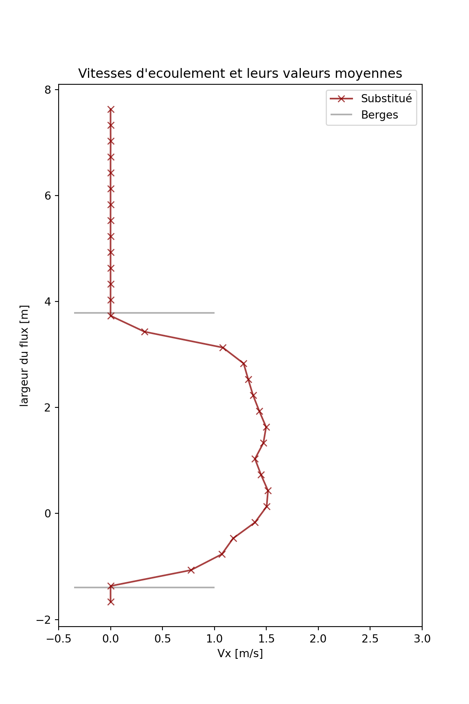

l’analyse des donnée
Ce fichier traite deux étapes de post-traitement pour acquérir des vitesses d’écoulement de surface à une section transversale spécifique. Les étapes de post-traitement sont nommées filtrage et substitution . Les deux processus sont expliqués dans les sections suivantes. Pour ces étapes, plusieurs informations supplémentaires sont nécessaires à savoir:
bathymétrie locale,
niveau d’eau,
paramètres de progression verticale des vitesses d’écoulement de surface.
Dans les sections à venir, traiter les sujets suivants: (1) les résultats non traités, (2) le filtrage des vitesses d’écoulement inférieures, et (3) la substitution des vitesses d’écoulement en cas de manque de graines.
import os
import numpy as np
import matplotlib.pyplot as plt
import pandas as pd
from scipy import interpolatedir_files = 'Python/files'
bat = r'Python/bathymetry.csv'Résultats non traités
la zone d’intérêt se situe à 1 mètre à gauche et à trois mètres à droite du point central de la bathymétrie (fournie dans le fichier bathymetry.csv). Comme l’écoulement va de gauche à droite, seules les composantes x des vitesses d’écoulement sont utilisées pour estimer les vitesses d’écoulement moyennes.
La largeur du ruisseau est divisée en différentes sections transversales. Pour chaque section, les vitesses d’écoulement sont rassemblées et une valeur moyenne est déterminée.
Tout d’abord, certaines caractéristiques de base sont prouvées. L’emplacement du centre de la bathymétrie dans l’imagerie (\(centre_x\) et \(centre_y\)), les emplacements des berges du cours d’eau à la bathymétrie (\(y_0\) et \(y_1\)), et le niveau d’eau (\(w_l\)) pendant la vidéo.
# localisation de la bathymétrie du centre dans l'imagerie (mètres).
# Utilisé pour aligner les vitesses d'écoulement avec la bathymétrie
centre_x, centre_y = [8.3471579 , 2.01868403]
# emplacements banques de flux
y0, y1 = [-1.397, 3.785]
# niveau d'eau (par rapport au point bathymétrique le plus bas)
wl = 0.9La bathymétrie se trouve dans le fichier bathymetry.csv. Pour utiliser cette bathymétrie, les points sont interpolés à l’aide de la fonction scipy.interpolate.interpolate.
# importer la bathymétrie locale
df_bat = pd.read_table(bat, sep=';', usecols=['Y', 'H'])
# fonction interpolée de la bathymétrie
func_bat = interpolate.interp1d(df_bat['Y'], df_bat['H'], kind='quadratic')
plt.figure(figsize= (12,4))
plt.scatter(df_bat.Y,df_bat.H,alpha=0.5,label ="Mesures individuelles")
plt.plot(df_bat.Y,func_bat(df_bat.Y),color ="black", alpha=0.3,label= "Bathymétrie interpolée")
plt.xlabel('Y [m]')
plt.ylabel('Z [m]')
plt.legend(loc = 'lower right')
plt.show()Figure 8: la bathymétrie locale
# extraire les noms des fichiers texte
files = os.listdir(dir_files)
# créer un dataframe dans lequel toutes les vitesses de la zone d'intérêt sont stockées
vx_all = pd.DataFrame()
# créer un tableau pour enregistrer les vitesses moyennes
vx_mean_raw = []
for file in files:
# importer un fichier unique et ajouter des vitesses dans la zone d'intérêt
# à la trame de données
df = pd.read_table(os.path.join(dir_files, file),
sep='\s+',
names=('X', 'Y', 'Vx', 'Vy', 's2n'),
header=0,
index_col= False)
df['X']=df['X'].astype('float')
df['Y']=df['Y'].astype('float')
df['Vx']=df['Vx'].astype('float')
df['Vy']=df['Vy'].astype('float')
df = df[df['X'] > (centre_x - 1)]
df = df[df['X'] < (centre_x + 3)]
vx_all = vx_all.append(df)
# définir les différentes coordonnées y (sections de largeur de flux)
y_unique = np.sort(df.Y.unique())
# corriger les coordonnées y par rapport au 'centre' bathymétrique
y_corrected = y_unique - centre_yFiltrage
Comme la densité d’ensemencement n’est pas assez dense pour avoir des graines à chaque cellule de la grille, il y a des moments où aucune vitesse d’écoulement de surface n’est estimée, ce qui entraîne une large gamme de vitesses d’écoulement. Par conséquent, un filtrage supplémentaire est appliqué pour supprimer les estimations de vitesse d’écoulement inférieure.
Ce filtrage est basé sur la distance d’une mesure par rapport à la vitesse d’écoulement du 95e percentile dans cette section transversale. Si une valeur est plus éloignée que deux fois l’écart type du 95er centile, cette valeur est filtrée. Ou en bref, le filtrage est appliqué lorsque l’instruction suivante est remplie:
\[\begin{equation} V_{X} < V_{q95} - 2 \cdot \sigma_{V_{X}} \end{equation}\]Comme cette déclaration peut entraîner un filtrage excessif, une autre instruction (ou seuil) doit être satisfaite avant que le filtrage ne soit appliqué à une section transversale. Le 95e centile doit être supérieur à 2,5 fois l’écart type:
\[\begin{equation} V_{q95} > 2.5 \cdot \sigma_{V_{X}} \end{equation}\]Les nouvelles estimations des vitesses d’écoulement moyennes peuvent être faites.
# tableau pour stocker les vitesses d'écoulement moyennes
vx_mean_fil = []
# pour chaque section transversale
# trouver les vitesses d'écoulement correspondantes et supprimer les valeurs NaN
for yy in y_unique:
vxi = vx_all.Vx[vx_all.Y == yy]
vxi = vxi[np.isfinite(vxi)]
# si toutes les valeurs sont NaN, créez un tableau de longueur 1
if len(vxi) == 0:
vxi = [0]
# déterminer le 95e quantile et l'écart type
v_filter = np.quantile(vxi, 0.95)
std = np.std(vxi)
# le filtrage est appliqué si le 95e centile> 2,5 * std
if 2.5*std/v_filter < 1:
# le filtrage est appliqué sur les valeurs plus éloignées que 2 * std du 95e centile
vxi_in = vxi[vxi > v_filter - 2*std]
vxi_out = vxi[vxi < v_filter - 2*std]
# ajouter une valeur moyenne en fonction des résultats filtrés
vx_mean_fil.append(np.mean(vxi_in))
# si le filtrage n'est pas appliqué: déterminer la moyenne sur toutes les valeurs
else:
vx_mean_fil.append(np.mean(vxi))Substitution
Comme dans certaines sections transversales aucune graine n’est présente, les vitesses d’écoulement sont à coup sûr sous-estimées à ces endroits. Pour encore faire une estimation éclairée des vitesses d’écoulement à ces endroits, les vitesses d’écoulement à différents stades de l’onde de crue sont estimées et utilisées pour établir une relation entre les vitesses d’écoulement de surface et la profondeur de l’eau. Cette relation est approchée en utilisant la loi logarithmique de Prandtl-von Kármán:
\[\begin{equation} V_{x_sub}(h) = \frac{u_{\star}}{\kappa} \ln\left[\frac{h - d}{h_0}\right] \end{equation}\]Dans cette formule \(V_{x_sub}(h)\) est la vitesse d’écoulement à la profondeur de l’eau \(h\); \(u_{\star}\) est la vitesse de cisaillement;\(\kappa\) est la constante de von Kármán (\(\approx 0.41\)); \(h_0\) est la profondeur de rugosité; \(d\) est le déplacement dans le plan zéro. Pour l’exemple de vidéo, \(u_{\star}\) , \(h_0\) et \(d\) sont estimés à \(0.235\) , \(0.054\) et \(0.15\).
Les vitesses d’écoulement de surface sont remplacées si la vitesse d’écoulement de surface est la moitié de la valeur de substitution et lorsque la section se trouve dans les berges du cours d’eau.
def vertical_flow(loc_wd, p, d=0.15):
us = p[0]
h0 = p[1]
return us/0.41 * np.log((loc_wd - d) / h0)
# paramètres de vitesse d'écoulement de surface de progression verticale
param = [0.235, 0.054]# créer une copie des vitesses d'écoulement moyennes filtrées
vx_mean_rep = vx_mean_fil.copy()
# déterminer les profondeurs d'eau à différentes coordonnées y corrigées
# s'il y a de l'eau (wd> 0) et si y est compris entre -3 et 3 (pas de buissons)
# si moyenne * 2 <valeur trouvée en utilisant le profil vertical
wd = wl - func_bat(y_corrected)
for nn, loc_wd in enumerate(wd):
if loc_wd > 0.15:
if (y_corrected[nn] > -3.5) and y_corrected[nn] < 3.5:
# si 2 * la valeur médiane est inférieure à la valeur corrigée: valeur correcte
# tous les centiles
if vx_mean_rep[nn] < 0.5*vertical_flow(loc_wd, param):
vx_mean_rep[nn] = vertical_flow(loc_wd, param)# afficher les vitesses individuelles et les vitesses moyennes des différentes étapes
# de post-traitement
fig = plt.figure(figsize=(6,9))
plt.plot(vx_mean_rep, y_corrected,
color='darkred', marker='x', zorder=2, alpha=0.75, label='Substitué')
plt.hlines([y0, y1], xmin=-0.35, xmax=1, color='k', alpha=0.3, label='Berges')
plt.title("Vitesses d'ecoulement et leurs valeurs moyennes")
plt.xlabel('Vx [m/s]')
plt.ylabel('largeur du flux [m]')
plt.xlim(-.5, 3)## (-0.5, 3.0)plt.legend()
plt.show()
Estimation de décharge
Les rejets sont estimés en utilisant la méthode de la surface de vitesse, en utilisant la formule suivante:
\[\begin{equation} Q = \sum_{n=1}^{N} v_n \cdot d_n \cdot b_n \end{equation}\]D’où \(v_n\) , \(d_n\), et \(b_n\) sont respectivement la vitesse d’écoulement, la profondeur et la largeur moyennes en profondeur de la section.
Pour la vitesse d’écoulement moyenne en profondeur, la vitesse d’écoulement de surface est multipliée par un coefficient déterminé empiriquement \(\alpha\). Ce coefficient est généralement entre \(0.72\) et \(0.95\). Pour l’exemple de vidéo, le coefficient est estimé à \(0.85\).
# coefficient moyen en profondeur
alpha = 0.85
# sections transversales en largeur
step = y_corrected[1]-y_corrected[0]
# estimation de débit
Q = sum(vx_mean_rep * wd * alpha * step)
print("Le débit moyen est estimé à {} m³/s".format(round(Q, 2)))## Le débit moyen est estimé à 3.74 m³/s